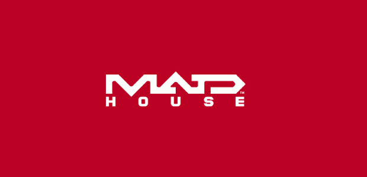

Anime Studio
Madhouse Inc. (stylized as MADHOUSE; Japanese: 株式会社マッドハウス, Hepburn: Kabushiki-gaisha Maddohausu) is a Japanese animation studio founded in 1972 by ex–Mushi Pro animators, including Masao Maruyama, Osamu Dezaki, Rintaro and Yoshiaki Kawajiri.
Madhouse has created and helped to produce many well-known shows, OVAs and films, starting with TV anime series Ace o Nerae! (produced by Tokyo Movie) in 1973, and including Wicked City, Ninja Scroll, Perfect Blue, Vampire Hunter D: Bloodlust, Trigun, Di Gi Charat, Black Lagoon, Death Note, Paprika, Wolf Children, Parasyte: The Maxim and the first season of One-Punch Man. Unlike other studios founded at this time such as AIC and J.C.Staff, their strength was and is primarily in TV shows and theatrical features.
Expanding from the initial Mushi Pro staff, Madhouse recruited important directors such as Morio Asaka, Masayuki Kojima, and Satoshi Kon during the 1990s. Their staff roster expanded in the 2000s to include Mamoru Hosoda, Takeshi Koike, and Mitsuo Iso, as well as many younger television directors. The studio was also responsible for the first Beyblade anime series as well as the Dragon Drive anime and the 2011 anime adaptation of Hunter × Hunter.
The studio often collaborates with known manga artists, including Naoki Urasawa and Clamp. Madhouse produced adaptations of Urasawa's Yawara!, Master Keaton and Monster, with Masayuki Kojima helming the later two. The company has animated a number of CLAMP's titles, including Tokyo Babylon, two versions of X (a theatrical movie and a TV series), Cardcaptor Sakura and its sequel Clear Card, and Chobits...(more information about Madhouse studio)
Hunter✕Hunter Opening
More features coming on future website developments.